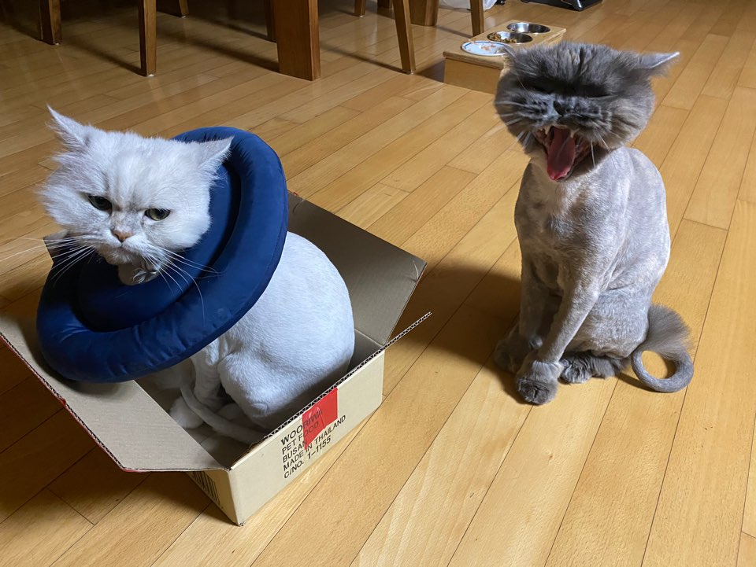

Hello, 효리&먼지♥
효리(8살): 2013년 05월 8일, 먼지(4살): 2017년 04월 20일.

효리와 먼지는 같은 페르시안 종류이지만 매우 다릅니다.
효리는 흰 바탕에 회색 털이 섞여 있고, 먼지는 회색 털에 갈색 털이 매우 조금 섞여 있습니다.
먼지는 식욕이 왕성해서 효리보다 덩치가 2배가량 큽니다. 골격이 커 걸을 때 꼭 치타같습니다.
그래서인지 효리는 먼지가 다가오는 것을 위협으로 느끼고 가끔 하악질을 합니다.